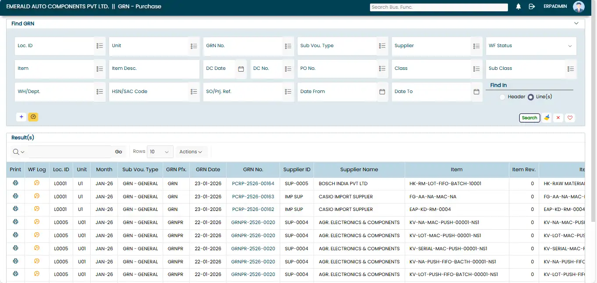
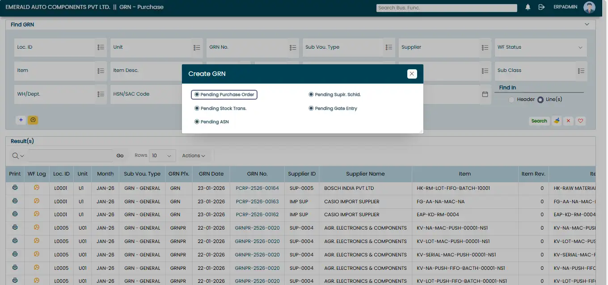
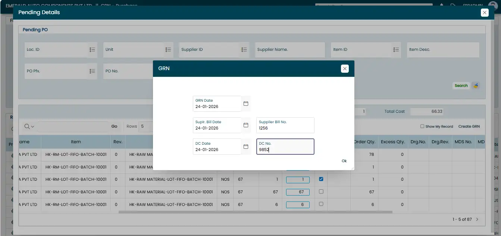

<div data-category="Purchase Order" data-title="GRN PR from Pending PO" data-updated="December 01, 2025" data-contributors="RoadmapIT" data-breadcrumb="Home,Purchase Order,GRN PR from Pending PO">
  <div class="page-content">
    <p>GRN PR (Goods Receipt Note Purchase Request) from Pending PO (Pending Purchase Order) allows users to generate a Goods Receipt Note directly from pending purchase orders.</p>

    <h5>Navigation path:</h5>
    <p class="fs-6">Supply Chain \ Purchasing \ Transaction \ GRN - Purchase</p>

    

    <ul style="list-style-type: none; align-content: center">
      <li class="mouse-icon">Click on Create GRN button.</li>
      <li class="mouse-icon">
        Click
        <i class="bi bi-clock-history text-primary"></i>
        button to create GRN from the approved purchase Orders without gate entry process. System navigates to the pending Purchase Orders.
      </li>
    </ul>

    

    <ul style="list-style-type: none; align-content: center">
      <li class="mouse-icon">Page navigated to Pending PO screen.</li>
    </ul>

    

    <ul style="list-style-type: none; align-content: center">
      <li class="mouse-icon">Select the document and Click Create GRN.</li>
      <li class="mouse-icon">Enter GRN date.</li>
      <li class="mouse-icon">Enter Supplier Bill number and Supplier DC number.</li>
      <li class="mouse-icon">Click OK button and GRN document is Created.</li>
      <li class="mouse-icon">System navigates to GRN Transaction screen automatically.</li>
    </ul>
  </div>
</div>
